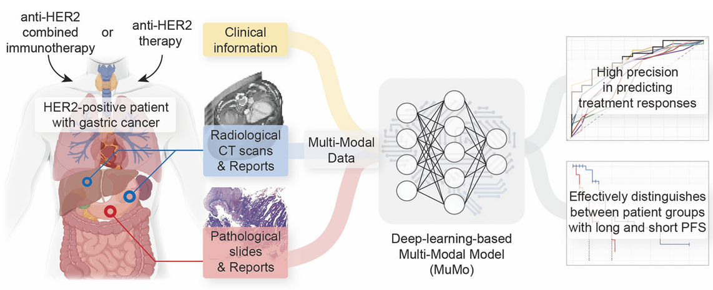
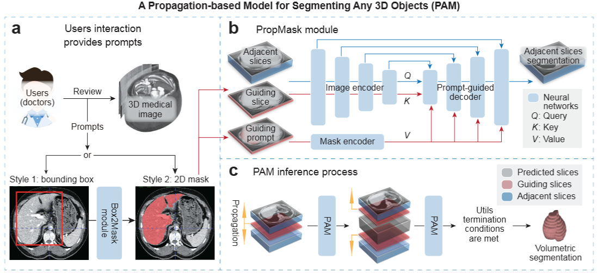
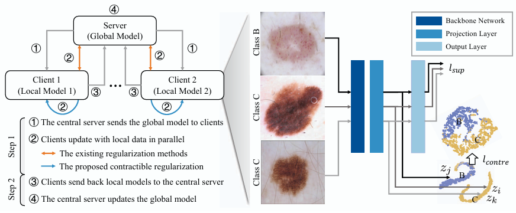
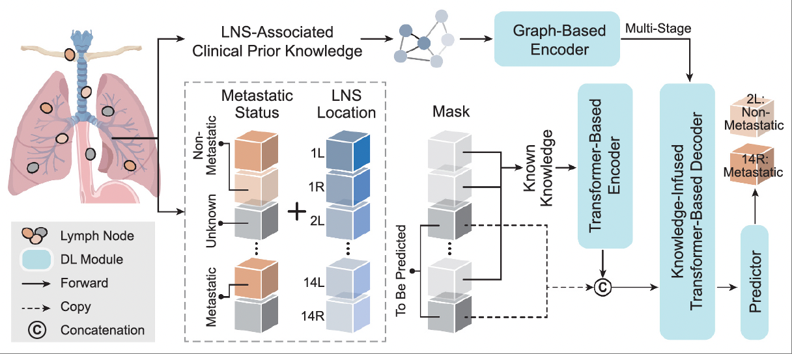
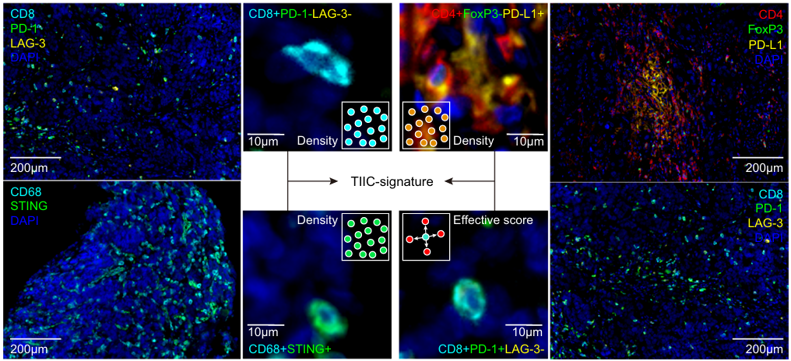

|
已发表论文（精选）
我的研究方向集中在多模态与跨尺度医疗人工智能，特别是在癌症患者的治疗响应与预后预测等临床任务方面。以下精选的论文展示了我近期的研究成果（完整的发表论文列表）。
注：# 表示第一作者（含共同），† 表示跨学科医工合作中的第一技术主导者。
|
|

|
Predicting gastric cancer response to anti-HER2 therapy or anti-HER2 combined immunotherapy based on multi-modal data
Zifan Chen#†, Yang Chen#, Yu Sun#, Lei Tang#, Li Zhang, Yajie Hu, Meng He, Zhiwei Li, Siyuan Cheng, Jiajia Yuan, Zhenghang Wang, Yakun Wang, Jie Zhao, Jifang Gong, Liying Zhao, Baoshan Cao, Guoxin Li, Xiaotian Zhang, Bin Dong, Lin Shen.
Signal Transduction and Targeted Therapy (影响因子: 52.7), 2024
|
|

|
PAM: A Propagation-Based Model for Segmenting Any 3D Objects across Multi-Modal Medical Images
Zifan Chen#†, Xinyu Nan#, Jiazheng Li#, Jie Zhao, Haifeng Li, Ziling Lin, Haoshen Li, Heyun Chen, Yiting Liu, Lei Tang, Li Zhang, Bin Dong
npj Digital Medicine (影响因子: 15.1), 2025
2025年度医学人工智能代表性算法提名
|

|
Associations of subcutaneous fat area and Systemic Immune-inflammation Index with survival in patients with advanced gastric cancer receiving dual PD-1 and HER2 blockade
Meng He#, Zifan Chen#†, Li Zhang, Xiangyu Gao, Xiaoyi Chong, Haoshen Li, Lin Shen, Xiaotian Zhang, Bin Dong, Ziyu Li, Lei Tang
Journal for ImmunoTherapy of Cancer (影响因子: 12.5), 2023
|

|
Predicting response to patients with gastric cancer via a dynamic-aware model with longitudinal liquid biopsy data
Zifan Chen#†, Jie Zhao#, Yanyan Li#, Yilin Li, Xinyu Nan, Huimin Liu, Xujiao Feng, Bin Dong, Lin Shen, Yang Chen, Li Zhang
Gastric Cancer (影响因子: 5.1), 2025
|
|

|
Contractible Regularization for Federated Learning on Non-IID Data
Zifan Chen#†, Zhe Wu#, Xian Wu, Li Zhang, Jie Zhao, Yangtian Yan, Yefeng Zheng
International Conference on Data Mining (ICDM), Regular paper (接收率: 9.77%), 2022
|
|

|
Deep Knowledge-Infused Transformer for NSCLC Lymph Node Station Metastasis Prediction: Development of an AI-Powered Intraoperative Decision System
Jie Zhao#, Zifan Chen#†, Guangzhengao Yang, Yijiang He, Li Zhang, Bin Dong
Medical Image Computing and Computer Assisted Intervention (MICCAI), 提前接收, 2025
|

|
Region-Aware Metric Learning for Open World Semantic Segmentation via Meta-Channel Aggregation
Hexin Dong#, Zifan Chen#, Mingze Yuan, Yutong Xie, Jie Zhao, Fei Yu, Bin Dong, Li Zhang
The 31st International Joint Conference on Artificial Intelligence (IJCAI), 2022
|

|
Multi-Scale Context-Guided Lumbar Spine Disease Identification with Coarse-to-fine Localization and Classification
Zifan Chen#†, Jie Zhao, Hao Yu, Yue Zhang, Li Zhang
该工作的原型模型荣获2020年脊柱疾病智能诊断AI挑战赛亚军（共3108支参赛队伍）。
IEEE International Symposium on Biomedical Imaging (ISBI), Oral, 2022
|

|
Deep learning model based on multi-lesion and time series CT images for predicting the benefits from anti-HER2 targeted therapy in stage IV gastric cancer
Meng He#, Zifan Chen#†, Song Liu#, Yang Chen#, Huan Zhang#, Li Zhang, Jie Zhao, Jie Yang, Xiaotian Zhang, Lin Shen, Jianbo Gao, Bin Dong, Lei Tang
Insights into Imaging (影响因子: 4.5), 2024
|

|
Advanced prompting as a catalyst: Empowering large language models in the management of gastrointestinal cancers
Jiajia Yuan#, Peng Bao#, Zifan Chen#, Mingze Yuan#, Jie Zhao, Jiahua Pan, Yi Xie, Yanshuo Cao, Yakun Wang, Zhenghang Wang, Zhihao Lu, Xiaotian Zhang, Jian Li, Lei Ma, Yang Chen, Li Zhang, Lin Shen, Bin Dong
The Innovation Medicine, 2023
|
|

|
Predicting response to immunotherapy in gastric cancer via multi-dimensional analyses of the tumour immune microenvironment
Yang Chen#, Keren Jia#, Yu Sun#, Cheng Zhang#, Yilin Li, Li Zhang, Zifan Chen, Jiangdong Zhang, Yajie Hu, Jiajia Yuan, Xingwang Zhao, Yanyan Li, Jifang Gong, Bin Dong, Xiaotian Zhang, Jian Li, Lin Shen
Nature Communications (影响因子: 15.7), 2022
|

|
Large Language Models Illuminate a Progressive Pathway to Artificial Healthcare Assistant: A Review
Mingze Yuan#, Peng Bao#, Jiajia Yuan#, Yunhao Shen#, Zifan Chen, Yi Xie, Jie Zhao, Yang Chen, Li Zhang, Lin Shen, Bin Dong
Medicine Plus, 2024
|
技术转化及专利授权情况
- 成功将两项关于肿瘤免疫微环境分析的专利转化为研究项目。
- 开发了一款用于多模态医学影像中通用目标三维分割的软件，目前正处于调试与优化阶段，2025年。
- 开发了一款用于组织分割与参数计算的自动化软件，已在北京大学肿瘤医院放射科应用，2024年。
- 开发了一款动态CT图像分析与抗HER2治疗反应预测软件，已在北京大学肿瘤医院放射科应用，2023年。
- 开发了一款用于胃食管结合部腺癌Siewert分型识别的定量软件，已在北京大学肿瘤医院放射科应用，2023年。
- 沈琳、陈杨、董彬、张立、李一林、赵杰、陈梓帆，癌症治疗反应预测系统及其控制方法，中国专利 CN117831789B，2024年。
- 张岩、李建平、姜一梦、张立、李浩申、陈梓帆、范芳芳、贾佳、赵杰、杨光正奥、骆星谕，一种基于双眼融合网络预测高血压的方法、系统和设备，中国专利 CN117788473B，2024年。
- 沈琳、董彬、陈杨、张小田、孙宇、张立、唐磊、赵杰、陈梓帆，肿瘤治疗预后预测方法、装置、电子设备及存储介质，中国专利 CN116721772B，2023年。
- 陈梓帆、张立、季加孚、董彬、赵杰、唐磊、李佳铮、刘一婷，基于目标影像的病灶检测方法和装置，中国专利 CN112634224B，2023年。
- 沈琳、陈杨、张江东、董彬、张小田、张立、陈梓帆、孙宇、赵杰、郏科人，肿瘤免疫治疗疗效预测方法、装置、电子设备及存储介质，中国专利 CN115295154B，2023年。
- 沈琳、陈杨、张江东、张小田、董彬、陈梓帆、张立、孙宇、赵杰、郏科人，肿瘤免疫治疗疗效评估方法、装置、电子设备及存储介质，中国专利 CN115294129B，2023年。
|
荣誉与奖项（精选）
- 2025年度医学人工智能代表性算法提名，2025-12。
- 2015-2016, 2016-2017, 2017-2018 国家奖学金。
- 2022-2023, 2023-2024 北京大学校长奖学金。
- 陈梓帆、赵杰、张立，脊柱疾病智能诊断人工智能挑战赛亚军（共3108支参赛队伍），2020年。
- 陈梓帆、董和鑫、于飞、赵杰、袁铭泽、张立，“之江杯”全球人工智能竞赛的零样本目标检测二等奖，2021年。
- 陈梓帆、赵杰、张立，“全国数字生态创新大赛——智能算法竞赛”初赛第四名，2021年。
- 陶星、陈梓帆，“之江杯”全球人工智能竞赛的零样本分割任务三等奖，2020年。
|
|